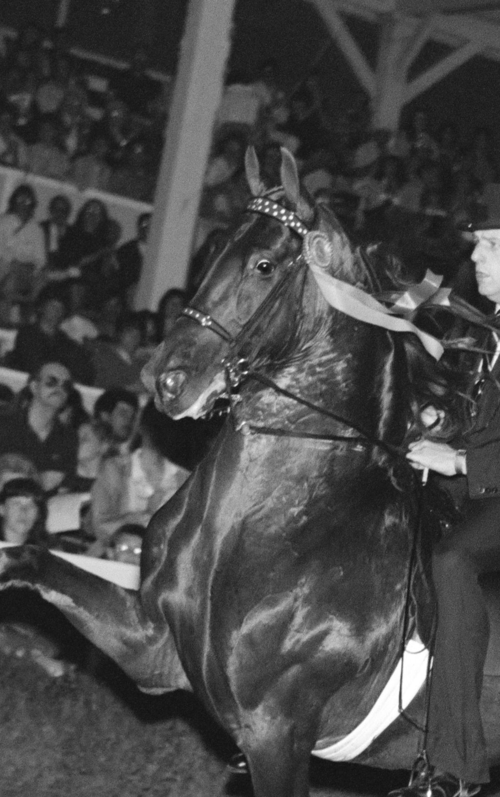

Publications
Essays, reviews, criticism, and one book — on horses, women, and the world they share.

Book · Narrative Nonfiction
Chasing an American Saddlebred Story
Horse shows used to draw crowds by the thousands to state fairs and venues like Madison Square Garden. In the 1980s, no performance horse filled more arena seats than the American Saddlebred Sky Watch. He pushed the saddle seat industry to a peak that hasn't been seen since. An athlete through and through, the stallion dominated the sport with the same power and intensity as a Kentucky Derby winner. With unmatched talent, his career was one for the history books, earning four World Grand Championships and twelve World titles overall.
Years after he finished competing, videos of Sky Watch's legacy in the ring captured the heart of author Emma Hudelson. A lifelong horsewoman, her rediscovery of the unstoppable stallion sent her on a journey to discover how a horse becomes a legend. If she can capture the magic behind the greatest show horse of all time, maybe she can understand her own obsession with Saddlebreds.
Sky Watch: Chasing an American Saddlebred Story is the tale of not only a remarkable horse, but of the American Saddlebred breed and the way these horses carried one rider back to herself. Tracking the path of Sky Watch's success, Hudelson's book is a deeply personal homage to one of the sport's greatest show horses and the indelible impression he left on the breed and in the hearts of those who loved him.
The Cincinnati Review — Issue 19.2
"When Riders Write"
A 2,255-word review of Horse Girls, Halimah Marcus's essay anthology — on women, equestrianism, race, class, and the bond between horse and rider. One of Emma's most widely read pieces.
Dec 12, 2022
ReadFlying Island Journal
"Damline"
Creative nonfiction on lineage, landscape, and what we inherit — genetically, spiritually — from the animals who shaped our families.
May 2021
ReadSoutheast Review
Craft Essay
On the art of the biographical essay: how to write about real people, real animals, real lives — and the ethical weight of the nonfiction narrator.
2022
ReadThe Chattahoochee Review
Personal Essay
An essay on equine obsession and the ethics of witness — the consuming nature of passion and what it costs.
2021
The Rumpus
Personal Essay
On women, ambition, and the stories we tell ourselves to keep moving forward.
2020
BUST
Essay
Writing for one of feminism's signature cultural publications.
2019
The Cincinnati Review
"On Creating an Artistic Legacy"
One-question interview with Marianne Chan and Maggie Su — on legacy, influence, and what writers leave behind.
2023
ReadIndiana Writers Center
Profile — Emma Hudelson
Feature on Emma's work, her path to Sky Watch, and her role in Indiana's literary community.
2024
ReadRegular Contributor
The American Saddlebred's premier publication. Emma contributes regular features on horses, horsepeople, and the culture of the Saddlebred show world — bringing her essayist's eye to a community she has been part of since childhood.